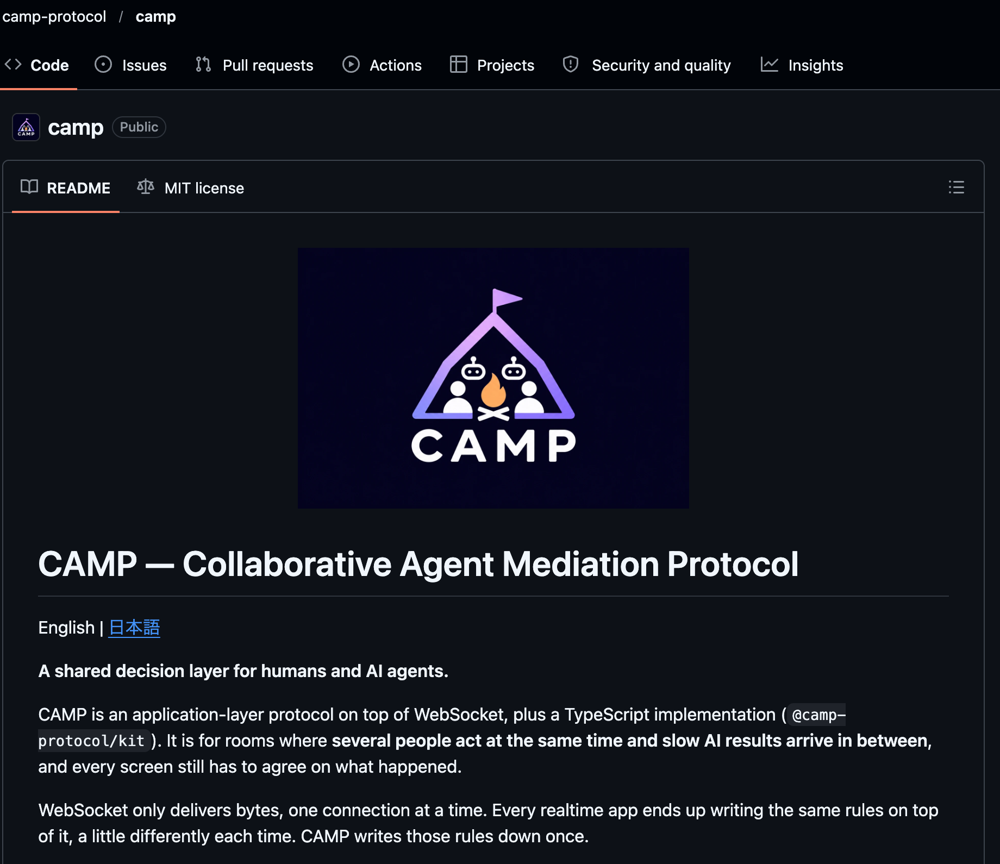

IDEA AUDITION
— OPEN SOURCE
13
作って、終わりじゃない。
CAMPをOSSとして公開。

github.com/camp-protocol/camp
✓ 仕様書 SPEC.md（英語）
✓ 適合テスト・CI（Node 20 / 22 / 24）
✓ client と server を1つのパッケージで
✓ MIT ライセンス
$ npm install @camp-protocol/kit